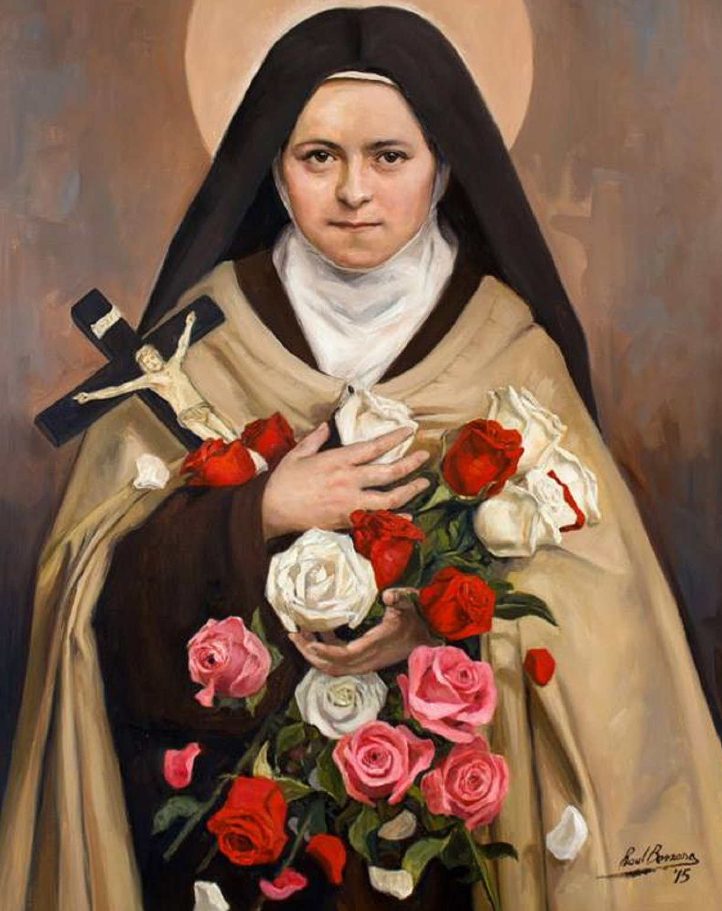

“Me preguntas por un método para alcanzar la perfección. Yo conozco el amor y solo el amor.”

— Santa Teresita del Niño Jesús
Hoy vuelvo a hacer un fuerte llamamiento tanto a las partes implicadas como a la comunidad internacional para que pongan fin al conflicto en Tierra Santa, que ha causado tanto terror, destrucción y muerte.
— Papa León XIV (@Pontifex_es) 27 ago 2025